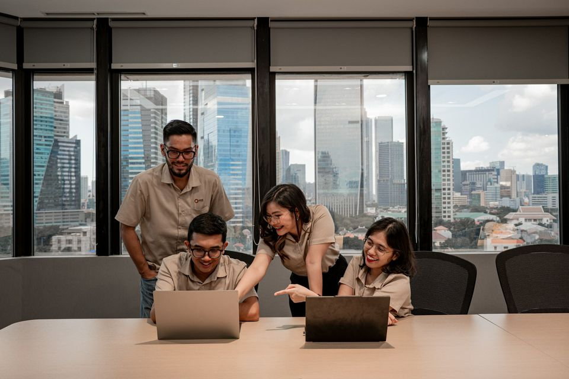
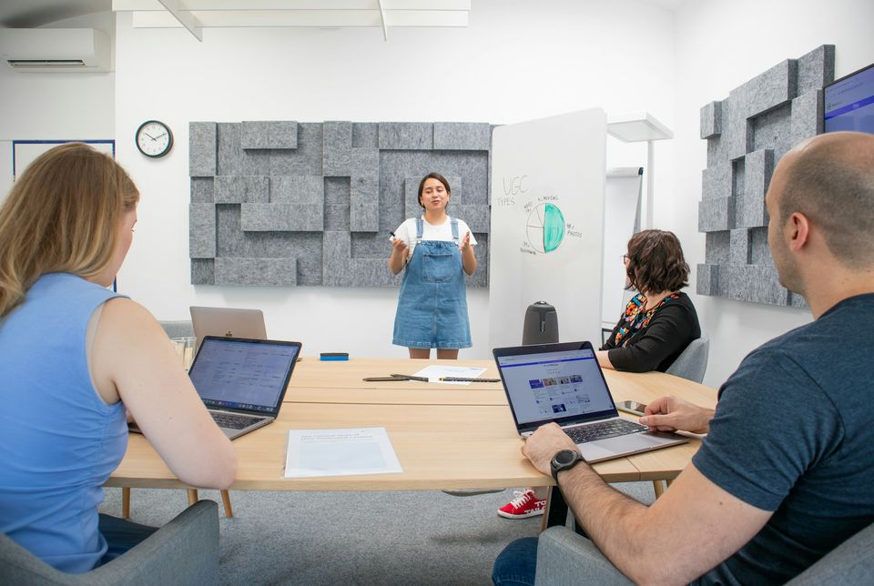

For business owners and leaders moving from one person using AI to teams, systems and change that lasts.

01 Systems
Build workflows your business can actually repeat.
One person's clever prompt isn't a system. A system is written down, shared with the team, and still works when that person is on leave.
- Document the steps before you automate them.
- Standardize prompts and templates across the team.
- Decide where the human review sits, and keep it there.
02 Transformation
Move from isolated AI experiments to practical adoption.
Most teams have tried AI somewhere. Adoption means choosing a few priority uses, rolling them out properly, and learning as you go.
- Start from a map of opportunities, not a list of tools.
- Pilot with one team, then expand what works.
- Give people time and training to adjust.

03 Leadership
Help teams understand where AI fits, and where human judgment still matters.
Leaders set the tone: what gets automated, what always gets reviewed, and how people are supported through the change.
- Set clear, simple guidelines for how the team uses AI.
- Keep a person in the loop for anything client-facing.
- Talk openly about how roles will change.
04 Growth
Build systems that support growth instead of adding more manual work.
When a business grows, manual work grows with it, unless the workflows scale first.
- Automate the repetitive handoffs between people and tools.
- Respond to leads and customers faster, so none get lost in an inbox.
- Check what actually changed after each improvement.
05 For teams & organizations
Bring this to your team.
Tell us a little about your organization and what you want to change. We'll get back to you about workshops, programs or coaching that fit.